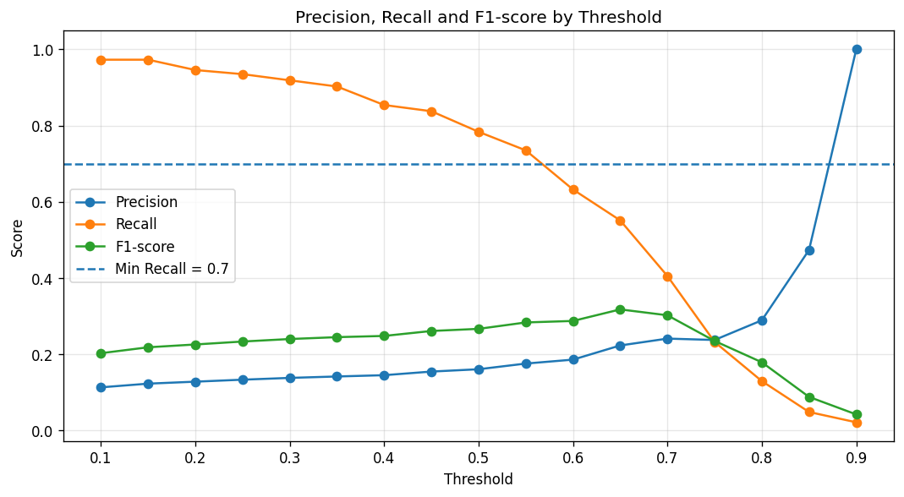
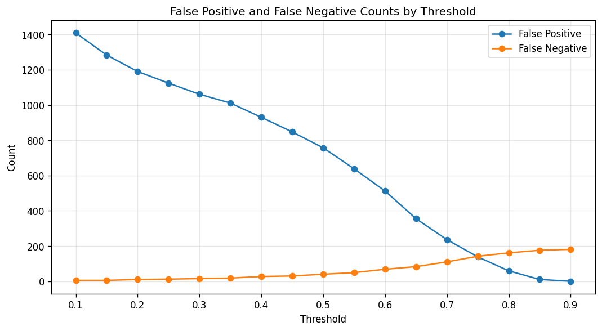
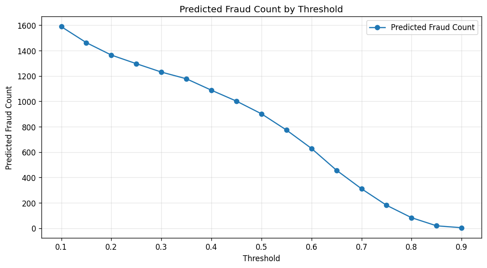

This report compares multiple decision thresholds for the fraud detection model. The goal is to choose a threshold that balances fraud detection recall and investigation workload.
0.55
Selection strategy: maximize_precision_with_minimum_recall
Reason: Selected threshold maximizes precision while keeping recall >= 0.7.
| Metric | Value |
|---|---|
| Selected Threshold | 0.55 |
| Precision | 0.1757 |
| Recall | 0.7351 |
| F1-score | 0.2836 |
| False Positive | 638 |
| False Negative | 49 |
| True Positive | 136 |
| True Negative | 2261 |
The threshold with the highest F1-score is:
0.65
| Metric | Value |
|---|---|
| Best F1 Threshold | 0.65 |
| Precision | 0.2232 |
| Recall | 0.5514 |
| F1-score | 0.3178 |
| False Positive | 355 |
| False Negative | 83 |



| threshold | precision | recall | f1_score | true_negative | false_positive | false_negative | true_positive | predicted_fraud_count | predicted_not_fraud_count |
|---|---|---|---|---|---|---|---|---|---|
| 0.10 | 0.1133 | 0.9730 | 0.2029 | 1490 | 1409 | 5 | 180 | 1589 | 1495 |
| 0.15 | 0.1230 | 0.9730 | 0.2184 | 1616 | 1283 | 5 | 180 | 1463 | 1621 |
| 0.20 | 0.1282 | 0.9459 | 0.2258 | 1709 | 1190 | 10 | 175 | 1365 | 1719 |
| 0.25 | 0.1334 | 0.9351 | 0.2335 | 1775 | 1124 | 12 | 173 | 1297 | 1787 |
| 0.30 | 0.1381 | 0.9189 | 0.2401 | 1838 | 1061 | 15 | 170 | 1231 | 1853 |
| 0.35 | 0.1418 | 0.9027 | 0.2450 | 1888 | 1011 | 18 | 167 | 1178 | 1906 |
| 0.40 | 0.1452 | 0.8541 | 0.2482 | 1969 | 930 | 27 | 158 | 1088 | 1996 |
| 0.45 | 0.1547 | 0.8378 | 0.2612 | 2052 | 847 | 30 | 155 | 1002 | 2082 |
| 0.50 | 0.1608 | 0.7838 | 0.2668 | 2142 | 757 | 40 | 145 | 902 | 2182 |
| 0.55 | 0.1757 | 0.7351 | 0.2836 | 2261 | 638 | 49 | 136 | 774 | 2310 |
| 0.60 | 0.1860 | 0.6324 | 0.2875 | 2387 | 512 | 68 | 117 | 629 | 2455 |
| 0.65 | 0.2232 | 0.5514 | 0.3178 | 2544 | 355 | 83 | 102 | 457 | 2627 |
| 0.70 | 0.2412 | 0.4054 | 0.3024 | 2663 | 236 | 110 | 75 | 311 | 2773 |
| 0.75 | 0.2376 | 0.2324 | 0.2350 | 2761 | 138 | 142 | 43 | 181 | 2903 |
| 0.80 | 0.2892 | 0.1297 | 0.1791 | 2840 | 59 | 161 | 24 | 83 | 3001 |
| 0.85 | 0.4737 | 0.0486 | 0.0882 | 2889 | 10 | 176 | 9 | 19 | 3065 |
| 0.90 | 1.0000 | 0.0216 | 0.0423 | 2899 | 0 | 181 | 4 | 4 | 3080 |
The selected threshold is saved to:
artifacts/threshold.json
The prediction layer should use this selected threshold instead of the default 0.50 threshold.